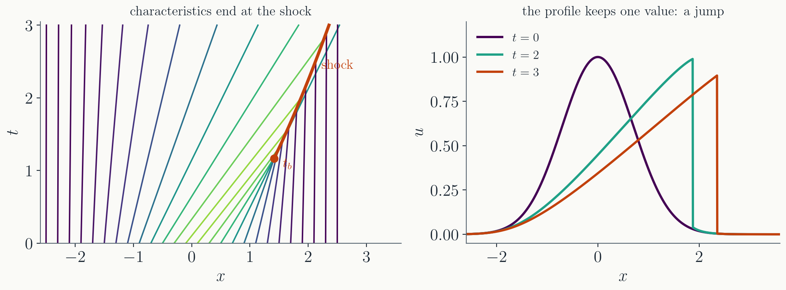
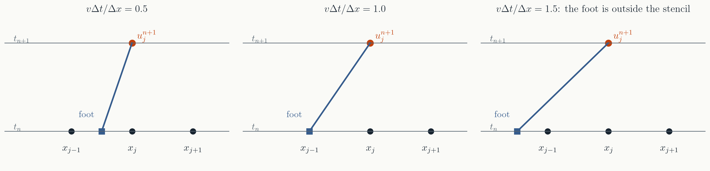

Partial differential equations: advection and characteristics
Prof. Alex Chen
Department of Physics
Washington University in St. Louis
Where we are
Weeks 4 to 7: ordinary differential equations. One
independent variable, usually time; initial value problems and
boundary value problems.
Weeks 8 to 9: linear algebra, because the
grid method turns a boundary value problem into
$\mathbf{A}\mathbf{x} = \mathbf{b}$.
From today: partial differential equations.
Unknowns that depend on space and time, and the methods
that fluid, plasma and electromagnetic simulations are built
on. Project 2 will use them.
Today: the simplest PDE there is, the one
idea that explains how its solutions move, and the first scheme
that gets it right.
Part I · The advection equation
A profile carried along at constant speed
What a PDE is
An equation for a function of several
variables, involving its partial derivatives. The ones physics
runs on:
$\partial_t \rho + \partial_x(\rho v) = 0$, and two more
fluids and gases
Same two kinds as for ODEs. Diffusion, wave
and Schrödinger are initial value problems: given
$u$ at $t = 0$, march forward. Poisson is a boundary value
problem: $\phi$ on the boundary, solve for the inside.
Same plan as BVP in ODEs: put space on a grid,
replace derivatives by differences, and the PDE becomes a large
system of ODEs, or a large linear system.
The simplest PDE
Something is carried along at a
constant speed $v$, without changing shape. Dye in a pipe, a
pulse on a conveyor belt, a density of cars on a road where
everyone drives at $v$. Its density $u(x, t)$ obeys
First order in $t$ and in $x$, linear, with
one parameter. Called the advection equation: advection
is transport by a flow.
An initial value problem: give $u(x, 0) =
u_0(x)$ and ask for $u(x, t)$ later.
Everything in fluid dynamics has a term of
this form in it. If a method cannot do this equation, it cannot do
fluids.
Its exact solution
Guess that the profile just moves:
$u(x, t) = f(x - vt)$ for some function $f$. Check it with the
chain rule, with $f'$ the derivative of $f$ with respect to its
argument:
$u$ is constant along these lines. They are
the characteristics of the equation, and the PDE says:
nothing happens along them.
What the lines tell you
The value at $(x, t)$ depends on the initial data at
one point, $x - vt$. Nothing else matters.
Information travels at speed $v$, no faster
and no slower. A change made at $x_0$ at $t = 0$ is felt at $x$
exactly at $t = (x - x_0)/v$.
On a finite domain $[0, L]$ with $v > 0$,
the characteristics enter at $x = 0$ and leave at $x = L$. So a
boundary condition is needed at the inflow end only.
Prescribing $u$ at the outflow end would contradict what the
characteristic brings there.
Sharp features are preserved. The equation
does not smooth anything; a numerical method that does is
adding something of its own.
Each of these will come back when we build
a scheme: where to take information from, how far it can travel
in one step, where boundary conditions belong.
Part II · Characteristics beyond the toy
Four changes to the equation, one idea
Variable speed
Let the speed depend on position:
$\partial_t u + v(x)\,\partial_x u = 0$. Follow a point moving
with the local flow, $dX/dt = v(X)$. The chain rule, with the
partial derivatives taken at the point $x = X(t)$:
The bracket is the PDE's left side at the
moving point, and the PDE holds everywhere. So $u$ is constant
along each curve, exactly as before.
Only the curves have changed: each is the
solution of the ODE $dX/dt = v(X)$ from its own starting point
$x_0$, and it is bent where $v$ varies.
To find $u$ at $(x, t)$: go back down the
curve through $(x, t)$ to $t = 0$, and read $u_0$ there. The next
slide does this step by step.
Building the solution
in general
example: $v(x) = x$
1. the curve from $x_0$
solve $dX/dt = v(X)$ with $X(0) = x_0$
$dX/dt = X$, so $X(t) = x_0\,e^{t}$
2. the value it carries
$u = u_0(x_0)$ all along the curve
$u_0(x_0)$
3. which curve reaches $(x, t)$?
solve $X(t) = x$ for $x_0$
$x_0\,e^{t} = x$, so $x_0 = x\,e^{-t}$
4. read off $u$
$u(x, t) = u_0(x_0)$
$u(x, t) = u_0(x\,e^{-t})$
Check: for constant $v$, step 1 gives $X = x_0
+ vt$, step 3 gives $x_0 = x - vt$, and step 4 is
$u_0(x - vt)$ again.
For $v = x$ the flow stretches: the profile
$u_0(x e^{-t})$ is the initial one widened by the factor
$e^{t}$. Where $v$ decreases with $x$ it compresses instead.
Step 3 is the only hard part. When it cannot
be done by hand, run the ODE $dX/dt = v(X)$ backward from
$(x, t)$ to $t = 0$ with any solver from Homework 4 or 5.
Converging curves steepen the profile
$v(x) = 1 + \frac{1}{2}\sin x$. Where $v$
decreases with $x$ the front of the pulse slows before the back
does, the characteristics bunch, and the profile compresses: its
steepest slope doubles, from $1.21$ to $2.42$, by $t = 3$.
The values are unchanged; only their spacing
is. The maximum is still $1$.
A source term
Let something happen to $u$ along the
way, a decay, a chemical reaction, a force:
$\partial_t u + v\,\partial_x u = s(x, t, u)$. Along $dX/dt = v$
the same chain rule gives
is the simplest model of a fluid: $u$
is the velocity, and each bit of fluid keeps its velocity and moves
with it. The recipe gives $dX/dt = u$ and $du/dt = 0$:
$u$ is constant along each characteristic,
so each characteristic is a straight line, with slope set by the
value it carries: $x = x_0 + u_0(x_0)\,t$.
Where $u_0$ is large the lines are fast.
Fast parts of the profile overtake slow parts.
They cross
Two neighbouring characteristics from $x_0$
and $x_0 + dx_0$ meet when $x_0 + u_0 t = x_0 + dx_0 +
(u_0 + u_0'\,dx_0)\,t$, that is at $t = -1/u_0'(x_0)$.
The first crossing is the breaking
time, $t_b = -1/\min u_0'$. For $u_0 = e^{-x^2}$,
$\min u_0' = -0.858$ at $x_0 = 0.71$, so $t_b = 1.17$.
After the breaking time

The folded profile is not a solution: $u$
must have one value. What forms instead is a shock, a
jump, and the characteristics end when they run into it.
The jump moves at the average of the two
sides, $(u_L + u_R)/2$, which is what keeps the area under $u$
conserved. Here it slows as the pulse behind it drains.
Characteristics say when the smooth
solution ends; conservation says what happens next. Gases do
this, and Project 2 will have to survive it.
Two families: the wave equation
The wave equation is second order,
but it factorizes into two first-order advection operators:
Anything killed by either factor is a
solution: $f(x - ct)$ moves right, $g(x + ct)$ moves left, and
the general solution is $u = f(x - ct) + g(x + ct)$
(d'Alembert).
Two families of characteristics, $x - ct =$
const and $x + ct =$ const, each carrying its own piece of the
solution.
A pulse released from rest splits into two
halves of height $\tfrac{1}{2}u_0$ moving apart.
The domain of dependence
The value at $(x, t)$ depends only on the
initial data in $[x - ct,\ x + ct]$: the two characteristics
through the point, traced back.
For advection the interval was a single
point. For a gas there are three families, at $v$ and
$v \pm c_s$, with $c_s$ the sound speed.
Any numerical scheme has a domain of
dependence too: the grid points it reads. It had better contain
the physical one.
Part III · From characteristics to a scheme
Back to constant $v$, and onto a grid
The grid
Points $x_j = j\,\Delta x$ and times
$t_n = n\,\Delta t$; the unknowns are $u_j^n \approx u(x_j, t_n)$.
Replace the derivatives by the differences of Lecture 12, centered
in space and forward in time:
Each new value comes from three old ones.
This is Euler's method applied to the system of ODEs
$du_j/dt = -v\,(u_{j+1} - u_{j-1})/2\Delta x$, one per grid
point. The scheme is called FTCS: forward time, centered
space.
The one number that matters is the
combination $C = v\Delta t/\Delta x$: how many grid spacings the
flow moves in one step.
FTCS fails
$C = 0.5$, 200 grid points, periodic box. The
peak grows to $1.5$ after 240 steps and the box is filled with a
grid-scale oscillation of amplitude $2 \times 10^3$ after 400.
Smaller $\Delta t$ does not save it; it only
delays the blow-up. The scheme is unstable for every $C$. Next
lecture shows why, by following a single wave on the grid.
Ask the characteristic
The exact solution says where the new
value comes from: go down the characteristic for one step,
$$u(x_j, t_{n+1}) = u(x_j - v\Delta t,\ t_n) .$$

The foot of the characteristic, $x_j -
v\Delta t$, is not a grid point. Read the old solution there by
linear interpolation between the two grid points around it,
$x_{j-1}$ and $x_j$.
The upwind scheme
The foot lies a fraction $C = v\Delta
t/\Delta x$ of the way from $x_j$ back to $x_{j-1}$. Linear
interpolation gives
$$u_j^{n+1} = (1 - C)\,u_j^n + C\,u_{j-1}^n .$$
Rearranged, it is a difference scheme:
$$\frac{u_j^{n+1} - u_j^n}{\Delta t} + v\,\frac{u_j^n - u_{j-1}^n}{\Delta x} = 0 .$$
The space derivative is one-sided, taken from the side the
flow comes from: upwind. For $v < 0$ use $u_{j+1}
- u_j$ instead.
Same cost as FTCS, and it only ever reads
information from where the characteristic says it is.
When it is exact, and when it breaks
$C = 1$: the foot lands exactly on $x_{j-1}$, and the scheme
is $u_j^{n+1} = u_{j-1}^n$, a pure shift. The exact solution,
to rounding.
$C > 1$: the foot lies beyond $x_{j-1}$,
outside the two points used. Interpolation has become
extrapolation, with a negative weight $1 - C$, and the errors
grow every step.
$C < 1$: stable, but each step averages
two neighbours, and averaging smooths. The profile smears a
little every step.
$C = v\Delta t/\Delta x \le 1$ is the
CFL condition (Courant, Friedrichs, Lewy, 1928): in one
step, the flow may not move farther than the scheme can see. The
numerical domain of dependence must contain the physical one.
Upwind in action
One crossing of the box. At $C = 1$ both
profiles return exactly. At $C = 0.5$ the Gaussian peak has
fallen to $0.71$ and the step's corners are gone: the averaging
of 400 steps.
The smearing is the price of stability in
this scheme. It looks like diffusion, and next lecture shows it
is diffusion, with a coefficient set by $\Delta x$ and
$C$.
Summary
Advection: $\partial_t u + v\,\partial_x u =
0$ carries the profile along, $u = u_0(x - vt)$.
Characteristics: the curves
$dX/dt = a$ along which the PDE becomes the ODE $du/dt = s$.
Variable speed bends them, a source changes $u$ along them,
nonlinearity makes them cross: a shock, at $t_b = -1/\min
u_0'$.
Domain of dependence: where
the value at $(x, t)$ comes from. One point for advection, an
interval for waves, three families for a gas.
Upwind: read the old
solution at the foot of the characteristic. Stable for $C =
v\Delta t/\Delta x \le 1$, the CFL condition, exact at $C = 1$,
smearing below it.
Next time: why FTCS blows up and upwind
smears, by following one wave through a step. Then schemes that
are second order: Lax, Lax-Wendroff, and leapfrog for the wave
equation.